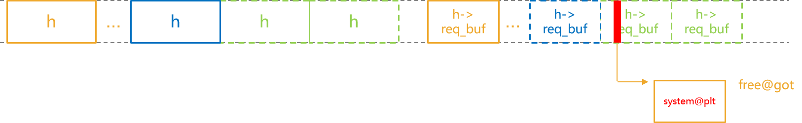
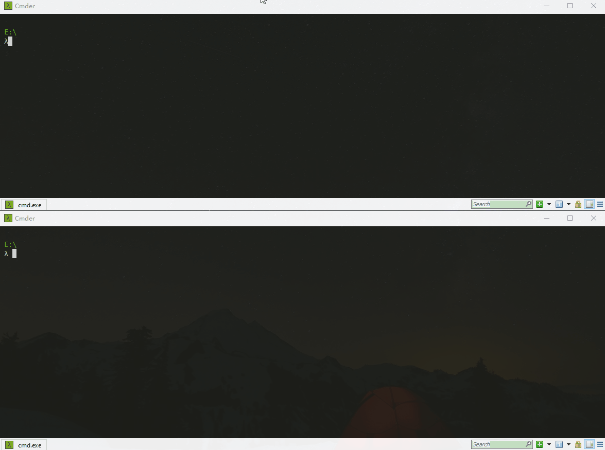

Analyzing the MiniDLNA Http Chunk Parsing Vulnerability (CVE-2023-33476)
前言
CVE-2023-33476是存在于ReadyMedia (MiniDLNA) 1.1.15 ~ 1.3.2版本中的一个越界读/写漏洞，该漏洞是由于在处理采用分块传输编码的HTTP请求时存在逻辑缺陷，通过伪造较大的分块长度，可造成后续进行拷贝时出现越界读/写问题。利用该漏洞，远程未授权的用户可实现任意代码执行。该漏洞是由安全研究员@hyprdude发现，目前已在MiniDLNA 1.3.3版本中修复了。同时，@hyprdude还提供了详细的漏洞分析和利用思路文章，感兴趣的可以看看。参考上面两篇文章，下文将对漏洞进行分析，并重点关注漏洞的利用思路。
环境准备
参考@hyprdude的文章，这里直接在Ubuntu 20.04系统上对minidlna源码进行编译。
1 | install deps (add missing deps if necessary) |
编译完成后，与minidlna服务相关的配置在minidlna.conf文件中。这里仅修改media_dir参数，如下。
1 | # port for HTTP (descriptions, SOAP, media transfer) traffic |
之后，运行sudo ./minidlnad -R -f minidlna.conf -d启动该服务，可通过访问"http://<ip>:8200/status"来测试服务是否正常运行。
漏洞分析
通过访问"http://<ip>:8200/status"，结合调试，主要的函数调用流程如下。
说明：有些函数不是直接被调用，而是通过Event事件处理机制调用。
1 | main() |
ProcessHttpQuery_upnphttp()主要用于解析和处理HTTP请求，其部分代码如下。在ProcessHttpQuery_upnphttp()中，其会先解析http请求行，之后在(1)处会调用ParseHttpHeaders()来解析请求头，其会设置upnphttp结构体中的部分字段。如果http请求采用分块传输编码，正常情况下，请求流程会到达(2)处，该while循环的主要目的是将请求体中的分块数据合并成一个，并保存到chunkstart指向的缓冲区。需要说明的是，为了到达(2)处，在调用ParseHttpHeaders()后，需要保证h->req_chunklen为0.
1 | static void ProcessHttpQuery_upnphttp(struct upnphttp * h) |
ParseHttpHeaders()的部分代码如下。其会先逐行解析http请求头并设置upnphttp结构体中的对应字段，在解析完请求头后，若http请求采用分块传输编码，程序流程会到达(3)处，该while循环主要用于对请求体中包含的分块长度字段进行校验。乍一看，该校验逻辑似乎没有问题，而实际上在(4)处由于运算符优先级的问题，原本的(h->req_chunklen = strtol(line, &endptr, 16)) > 0 变成了h->req_chunklen = (strtol(line, &endptr, 16) > 0)，导致h->req_chunklen的值只能是0或1，在(5)处对line指针的赋值结果会出现错误，从而可以绕过(3)处while循环中的(line < (h->req_buf + h->req_buflen))判断条件。也就是说，由于该逻辑缺陷的存在，我们可以伪造请求体中包含的分块长度字段，同时通过程序中存在的校验。
1 | static void ParseHttpHeaders(struct upnphttp * h) |
之后，回到ProcessHttpQuery_upnphttp()中。前面提到过，(2)处while循环的主要目的是将请求体中的分块数据合并成一个，并保存到chunkstart指向的缓冲区，而这里对h->req_chunklen的赋值计算是正确的。因此，当伪造一个较大的分块长度值时，在(6)处调用memmove()时会出现越界读/越界写问题。这里，endbuf和endptr实际上是指向同一个缓冲区中的不同位置，memmove()的效果相当于将对应的数据向左移动。如果仅在同一个缓冲区内，这种操作似乎不会存在问题，但由于h->req_chunklen可控，实际上可以影响到与h->req_buf相邻的堆块，这样就有机会”修改”相邻堆块中的内容。
1 | static void ProcessHttpQuery_upnphttp(struct upnphttp * h) |
触发崩溃的http请求示例如下。
1 | GET /status HTTP/1.1\r\nTransport-Encoding:chunked\r\n\r\nffffff\r\n0\r\n\r\n |
漏洞利用
程序minidlnad启用的缓解机制如下，同时环境中的ASLR级别为2.
1 | checksec --file ./minidlnad |
前面说过，endbuf和endptr指针实际上是指向h->req_buf堆块中的不同位置，借助该漏洞，可以修改与h->req_buf相邻堆块中的内容。针对堆相关的利用，常见的思路主要分为两类：1) 修改堆块中包含的正常数据，比如某个结构体中的函数指针等；2) 修改与堆块本身相关的元数据，比如size字段、fd指针等。至于采用哪种思路，则取决于具体的目标和上下文。
通过浏览minidlna的源码，在处理http请求的过程中，最主要的结构体为upnphttp，而该结构体中并未包含函数指针。虽然也可以修改其他的字段，但由于memmove()的效果相当于将对应的数据向左移动，在修改某个字段时，也会”修改”其前面的其他字段，而该结构体在很多地方都会被用到，可能会由于某个字段被修改导致程序crash。因此，这里采用第二种思路，即通过修改与堆块本身相关的元数据的方式来实现代码执行的目的。具体地，Ubuntu 20.04系统上使用的glibc版本为2.31，故这里采用Tcache Poisoning方式。
1 | /lib/x86_64-linux-gnu/libc.so.6 |
为了能完成Tcache Poisoning，在调用memmove()触发越界读/写操作时，需要满足如下条件：
- 与
h->req_buf相邻的堆块为一个空闲堆块，且其中包含用户可控的数据； endptr + h->req_chunklen需要指向相邻空闲堆块中<pointer>之后；- 向左移动的距离至少为
16字节 (endptr - endbuf)。
堆布局
为了满足上面的条件，需要借助程序提供的正常功能来进行堆布局，因此需要先对正常请求处理流程中涉及到的堆块申请与释放操作进行分析。以http://<ip>:8200/status请求为例，利用gdb python脚本来跟踪所有的malloc()与free()调用，主要的堆块申请与释放记录如下：
malloc(0x20)/free()：来自于log_err()，与外部请求无关malloc(0x100)：在New_upnphttp()中，用于创建并初始化upnphttp结构体 (malloc(sizeof(struct upnphttp)))malloc(xxx)：在Process_upnphttp()中，实际上对应realloc(xxx)，申请堆空间来保存接收的http请求 (h->req_buf = (char *)realloc(h->req_buf, new_req_buflen))malloc(xxx)/free()：在SendResp_presentation()中，对应/status接口的处理函数，其中会涉及到很多个堆块的申请与释放操作。可以通过访问不存在的url，或发送无效的http请求 进行规避malloc(xxx+0x184)：在BuildHeader_upnphttp()中，申请堆空间来保存生成的http响应 (h->res_buf = (char *)malloc(templen))free(h->req_buf)：在Delete_upnphttp()中，正常请求处理完或对应的套接字关闭后会释放h->req_buffree(h->res_buf)：在Delete_upnphttp()中，正常请求处理完或对应的套接字关闭后会释放h->res_buffree(h)：在Delete_upnphttp()中，正常请求对应的套接字关闭后会释放h
由上可知，upnphttp结构体的申请与释放与套接字相关，但其内容不是完全可控，而h->req_buf堆块的申请与接收的http请求相关，且内容完全可控。同时，在Process_upnphttp()中，只有当在接收的数据中定位到"\r\n\r\n"时，程序流程会继续向下执行，开始处理和解析接收的http请求，如果不存在"\r\n\r\n"，程序会尝试从套接字上读取更多数据。也就是说，通过发送伪造的http请求，可以让h->req_buf对应的堆块不会被过早释放。综上，h->req_buf对应堆块的申请、释放以及其内容是完全可控的，可以利用其来完成需要的堆布局。
1 | static void Process_upnphttp(struct event *ev) |
整体的堆布局思路如下：
与远端
minidlna服务建立10个套接字连接，但不发送数据 (一部分用于填充碎片堆块，一部分用来创建连续的堆块)通过前面的套接字发送伪造的数据 (与第1步之间可能需要增加适当延时，保证
h->req_buf对应的堆块与upnphttp结构体对应的堆块之间是分开的)按逆序依次关闭最后3个套接字，与套接字对应的
upnphttp结构体堆块和h->req_buf堆块会被释放创建1个正常的套接字
vuln_sock，并发送伪造的数据来触发越界读/写漏洞，与h->req_buf相邻空闲堆块的fd指针将被修改为可控指针。同时，该请求处理完后，对应的h->req_buf会被释放创建2个正常的套接字
tmp_sock，并发送包含cmd的数据，之后再创建1个套接字trigger_sock并发送数据，其对应的h->req_buf指向指定的任意地址，从而实现任意地址写操作 (可以选择将free@got修改为system@plt)释放前面创建的
tmp_sock，在执行free(h->req_buf)时相当于执行system(cmd)，从而实现代码执行的目的
其他
- 在使用套接字发送伪造的数据时，如何确定发送多长的数据，即
h->req_buf堆块的大小为多少合适？
若发送的数据太短，则无法包含后续要执行的cmd。若发送的数据过长，在实现任意地址写时，除了会修改free@got，还会修改之后的其他got表项。同时，需要保证h->req_buf对应堆块的大小在程序正常流程中未被频繁使用，以降低干扰。这里使用的请求数据长度为79。另外，除了修改free@got外，后续用到的fprintf@got和inet_ntop@got也被修改为system@plt。 - 在调用
memmove()时，如何控制向左移动的距离？
向左移动的距离等于endptr - endbuf，为了能修改相邻空闲堆块中的fd指针，正常情况下移动的距离需要至少为16个字节。通过在请求体中包含的分块长度前补"0"，可以控制向左移动的距离。
最终效果如下。
补丁分析
对该漏洞的修复也很简单，如下。
1 | --- a/upnphttp.c |
小结
本文基于Ubuntu 20.04环境，对MiniDLNA 1.3.2版本中存在的一个越界读/写漏洞进行了分析，并重点介绍了漏洞利用的思路，再次感谢@hyprdude提供的详细漏洞分析和利用思路文章。
相关链接
- ReadyMedia
- chonked pt.1: minidlna 1.3.2 http chunk parsing heap overflow (cve-2023-33476) root cause analysis
- chonked pt.2: exploiting cve-2023-33476 for remote code execution
- Exploits for a heap overflow in MiniDLNA <=1.3.2 (CVE-2023-33476)
- Tcache attack
- upnphttp: Fix chunk length parsing